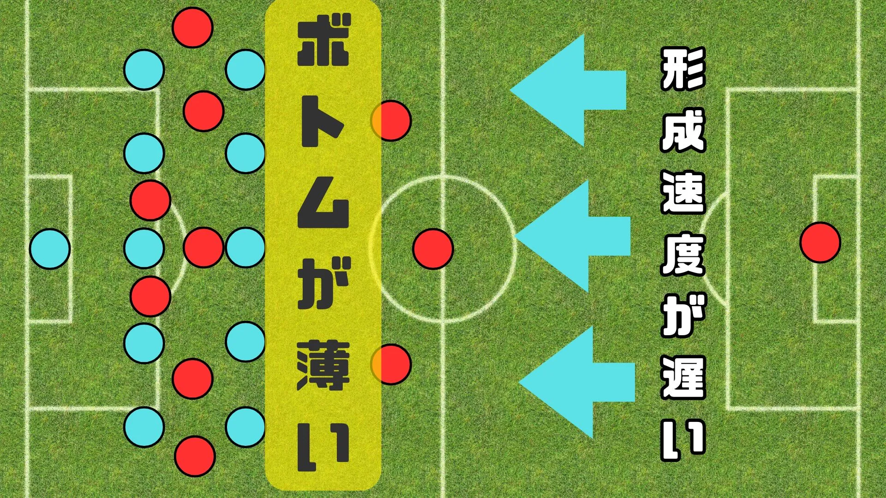
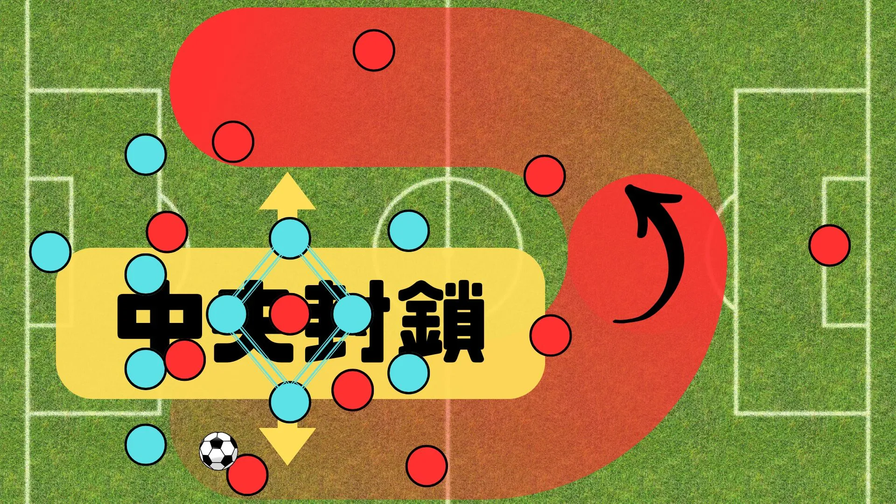
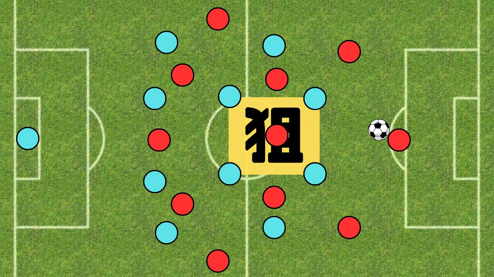

戦術の視方、考え方

戦術を設定する際にまず重要なのは、試合の中で起こる「4つの局面」を正確に把握することです。
この局面を理解することで、チームとしてどのようなプレーを目指すのか、そしてそのためにどのように連携すればよいのかを具体化できます。
戦術を理解することは、戦術を設定する第一歩です。
この記事では、サッカーの「4局面」の概要と、それぞれの局面でのチームの戦術的アプローチについて解説します。

目 次
1. 戦術の4局面とは？
局面は、攻撃と守備の2つだけではありません。
それらをさらに分割した4局面、フィニッシュ、ビルドアップ、プレス、ブロックがあります。
これらを認識することで、具体策やプランB（対策の対策）が構築しやすくなります。
攻撃戦術（フィニッシュ、ビルドアップ）
＜フィニッシュ＞
目的：得点を奪う
展開(ボールを奪われた時)：➡プレス
課題：
・DFの背後、ポケットを狙えているか。
・攻撃に枚数をかけて、奪われた後のプレスに備えられているか。
・対局のブロック戦術に対して、適切なフィニッシュ戦術を選択できているか。
＜ビルドアップ＞
目的：敵陣へ進む
展開(ボールを奪われた時)：➡ブロック
課題：
・プレス回避のために、立ち位置の調整やサポートをし続けられているか。
・ショートパス、ロングパスの片方だけに偏って、攻撃のリズムが一定になっていないか。
・対局のプレス戦術に対して、適切なビルドアップ戦術を選択できているか。
守備戦術（プレス、ブロック）
＜プレス＞
目的：ボールを奪う
展開(ボールを奪った時)：➡フィニッシュ
課題：
・プレスのスイッチを入れた時に、周りが連動して周辺マーク、スペースをケアできているか。
・サイドでのビルドアップに対しては、圧縮（逆サイドのマークは捨てる）しながらプレスをかけれているか。
・対局のビルドアップ戦術に対して、適切なプレス戦術を選択できているか。
＜ブロック＞
目的：ゴールを守る
展開(ボールを奪った時)：➡ビルドアップ
課題：
・ゴールに直結するスペース（中、縦）を消せるようにコンパクトなブロックを形成できているか。
・コンパクトなブロックで、ボールを奪った後のビルドアップに準備できているか。
・対局のフィニッシュ戦術に対して、適切なブロック戦術を選択できているか。
2. 局面の対決
この章では、具体的な戦術を対戦させて勝敗を決めます。（これは完全な主観になるので、自身で戦術を設定する際の参考程度に留めておいてください。）
フィニッシュ vs ブロック
サイド攻撃(lose) vs 5-5ブロック(win)
＜勝敗の理由＞
・5-5ブロックの利点は、全員守備の陣形でサイドに数位的優位をつくりやすく、カバーリングを繰り返しできることが特徴。
・クロスを放り込んでも密集により、シュートが打てず、セカンドボールも拾われやすい。
＜フィニッシュ側の改善策＞

・5-5ブロックの弱点は、形成速度の遅さとボトム（攻撃側の最終ライン）に対する薄さである。
・形成速度の遅さに対しては、カウンターで5-5ブロックを作らせる前に攻撃を完結させる。
また、カウンターのためにはブロック時に、前線に選手を残しておく必要がある。
・ボトムの薄さに対しては、ボトムを活用し、ライン間やゴール前にボールを供給し続け、量的優位を押し付ける。
中央突破(lose) vs 4-4-2ダイヤモンド(win)
＜勝敗の理由＞
・4-4-2ダイヤモンドの利点は、中盤ダイヤモンドによる中央スペースを封鎖できることが特徴。
・中盤ダイヤモンドに対して、中央突破はＮＧであり、カウンターの危険性もある。
＜フィニッシュ側の改善策＞

・4-4-2ダイヤモンドの弱点は、サイドのスペースとスライドの手間である。
・サイドのスペースに対しては、中央にリスクのあるパスを禁止し、サイドで数的優位を作る。
・スライドの手間に対しては、サイドを迂回してチャンスであれば攻撃、スライドが間に合ってくるなら迂回し逆サイドを繰り返すことで、体力の消耗とそれによってできたスペースを利用する。
ビルドアップ vs プレス
4-1-4-1ビルド(lose) vs 4-4-2プレス(win)
＜勝敗の理由＞

・4-4-2プレスの弱点は、2CFの後ろだが4-1-4-1ビルドだと、プレス対象が明確化されてしまう。
・また、狙いに通せたとしても、後ろ４枚で前方パスコースが少ないため前進できない。
・前線にロングボールを入れても1CFに対して2CBで数的優位を保ちつつ対応できる。
＜ビルドアップ側の改善策＞

・キーパー含めた3CBを形成し、前方パスコースを増やし前進する。
・少し前進できている場合は、リスク管理のためキーパー含めない3CBを形成。
・つまり4-4-2プレスに対しては、3CBを形成して2CF、2MF間（黄色の正方形）を利用しながら前進する。
3. まとめ
- 戦術の4局面とは、フィニッシュ、ビルドアップ、プレス、ブロック。
- 局面の対決を考えることで具体的な戦術案を作成できる。
このサイトでは、チーム練習と個人練習の2つに分けて、厳選された練習メニューをまとめています。
悪い意味での「伝統的な練習」への疑問。ただボールを蹴るだけの自主練。敗れる理由もわからない無策のチーム。
そんな悩みを解決するためにこのサイトを作り上げました。
蹴練場は日本全国のサッカーファミリーを応援しています。